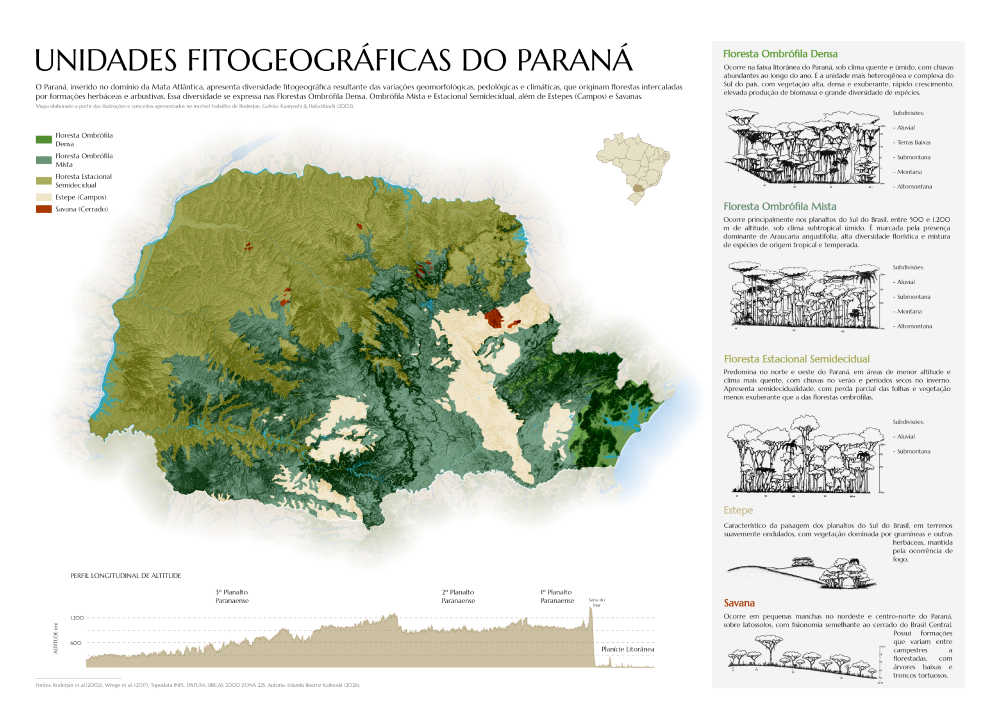
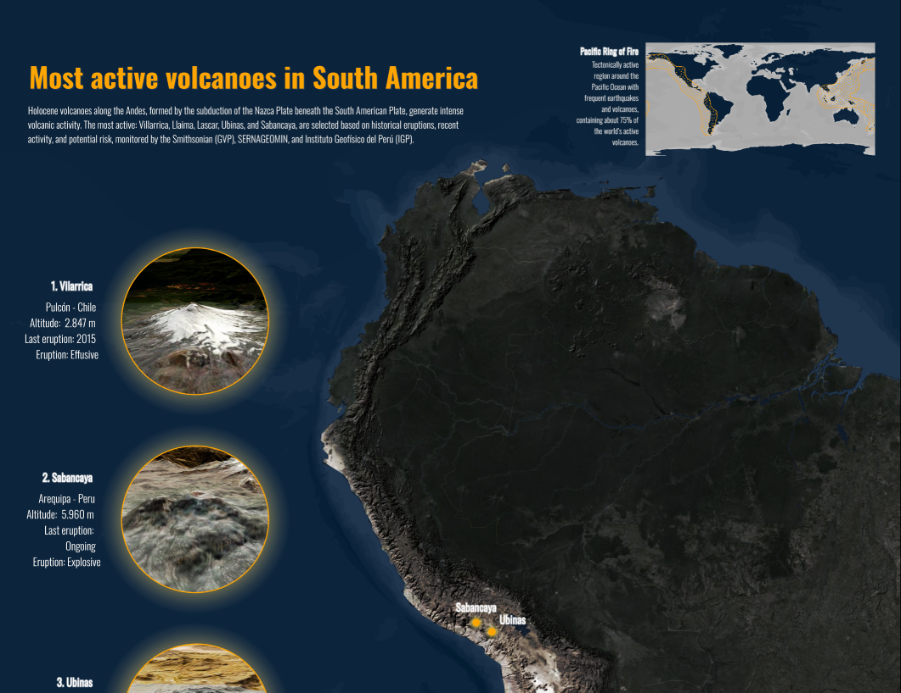

GIS Projects
Explore my latest work in GIS, remote sensing, and environmental monitoring.
SAR Monitoring: Cloud-Free Surface Analysis
Comparative analysis between Sentinel-1 radar and Sentinel-2 optical data.
View Project
Phytogeographic Units of Paraná
Distribution of Vegetation Formations in Relation to Topography.
View Project
Mountain Complex of the Paraná Serra do Mar
Cartographic representation of regional topographic patterns.
View Project
Most Active Volcanoes in South America
Thematic cartographic representation of active volcanic systems.
View Project